6 technológia, 1 felelős partner
Napelem és energiatárolás vállalatoknak
Napelem, ipari akkumulátor, hőszivattyú, EV-töltés és energiamenedzsment egy szerződésben, a felméréstől az üzemeltetésig. A megtérülés projekttől függően akár 3 év.
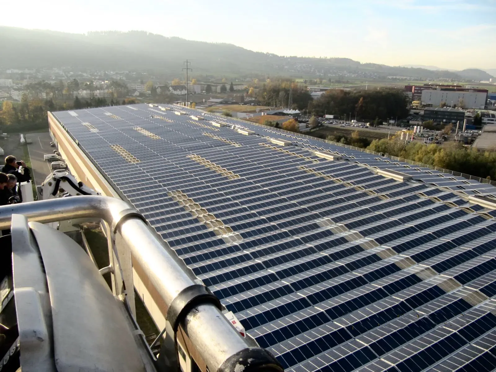
Napelemtől a hálózatig, egy kézből
- Napelemes rendszer
Tető, föld vagy carport, saját fogyasztásra.
PV - Ipari energiatárolás
Konténeres vagy szekrényes akkumulátor.
BESS - Hőszivattyú
Fűtés, hűtés, melegvíz, napelemmel vezérelve.
HP - EV-töltés
Flottatöltők RFID-vel és terheléskezeléssel.
EV - Energiamenedzsment
Valós idejű monitoring, automatikus optimalizálás.
EMS - Hálózati csatlakozás
Engedélyek, visszwatt-védelem, tarifa.
Grid
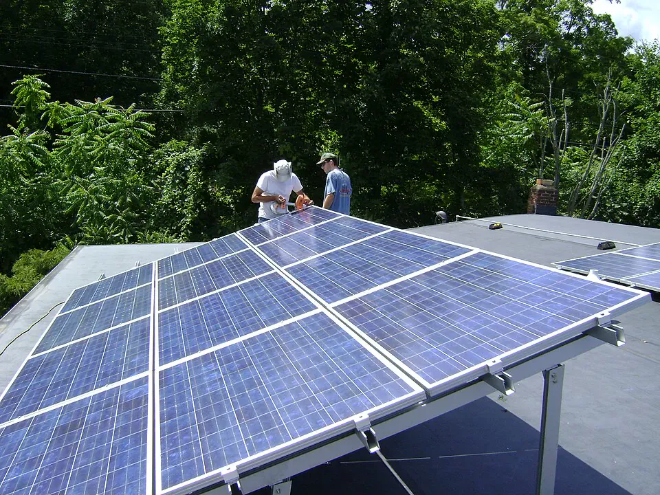
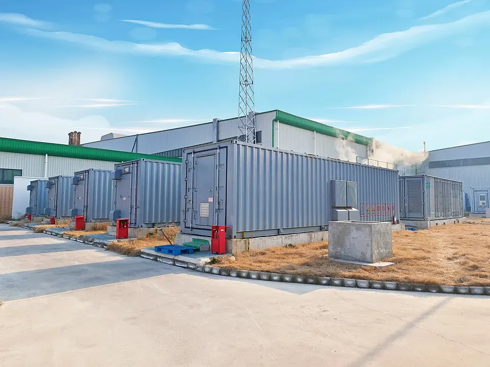
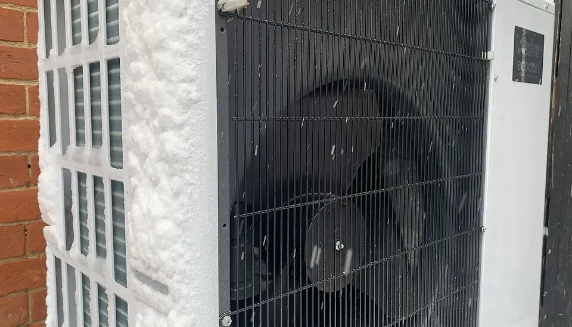
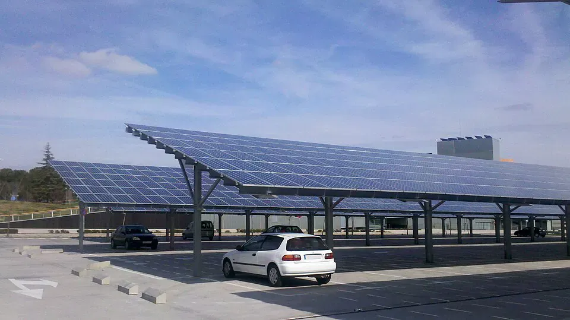
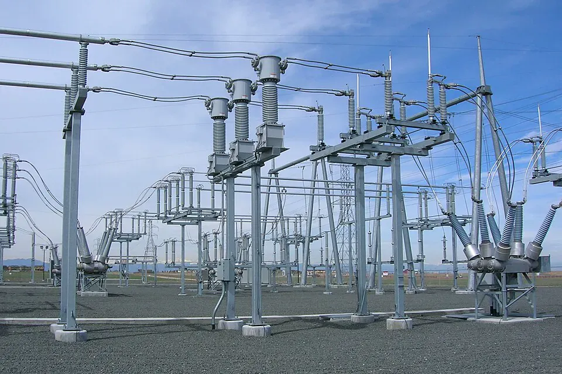
Egy EMS vezérli a telephelyet
A rendszer nemcsak termel és tárol: eldönti, mikor töltsön, mikor adjon és mikor vegyen a hálózatból, a fogyasztás és a piaci ár szerint.
- Napelem
A termelés minél nagyobb része helyben fogy el.
- Akkumulátor
Levágja a csúcsokat és kihasználja az árkülönbözetet.
- EMS
Adatok alapján, automatikusan vezérel.
Egy csapat a felméréstől az üzemeltetésig
-
Felmérés és tervezés
Bejárás, fogyasztási profil és hálózati lehetőségek, utána méretezés, megtérülési modell és tervdokumentáció.
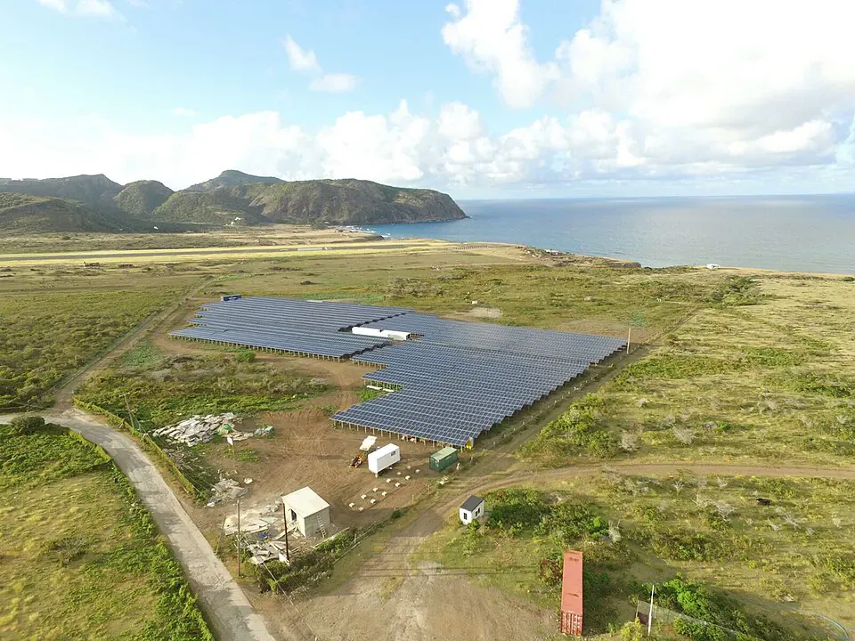
-
Finanszírozás és kivitelezés
Pályázat, hitelprogram vagy ESCO-konstrukció, utána ütemezett szerelés, beüzemelés és átadás.
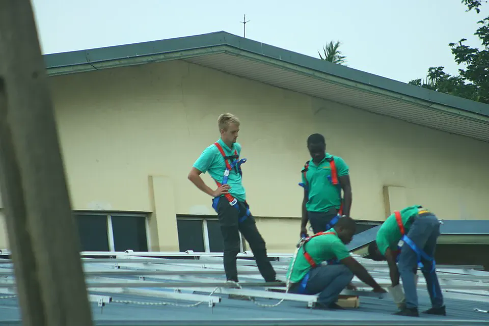
-
Üzemeltetés és szerviz
Távfelügyelet, karbantartás és szerviz, az EMS pedig folyamatosan optimalizálja a működést.
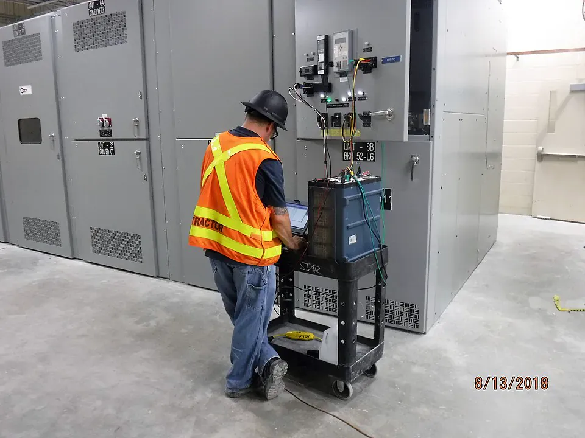
Mennyi idő alatt térül meg egy céges napelem?
Az éves fogyasztástól, a tarifától és az önfogyasztás arányától függ. A felmérés után projektre szabott megtérülési számítást adunk, pályázattal és hitellel együtt.
Mit ad hozzá az akkumulátor a napelemhez?
A napelem termel, a tároló a délutáni és esti órákra tolja az energiát, és levágja a csúcsterhelést. Így nő az önfogyasztás és csökken a lekötött teljesítmény.
Ki intézi a hálózati engedélyeket?
Mi. A csatlakozási kérelemtől a pályázati dokumentációig minden ügyintézést átvállalunk.
Mi történik az átadás után?
Távfelügyelettel, karbantartással és szervizzel üzemeltetjük a rendszert, az EMS pedig folyamatosan optimalizál.
Vállalnak több telephelyes projektet?
Igen. Több telephelyes és ipari programokat is egységes tervezéssel, projektvezetéssel és riportálással viszünk.
Pályázatok és hitelprogramok
Figyeljük a kiírásokat, megírjuk a pályázatot, és úgy állítjuk össze a finanszírozást, hogy a megtérülés a lehető legrövidebb legyen.
- Energiahatékonysági hitelprogram
0%-os kamat vállalkozások energetikai fejlesztéseire.
Hitel - Nemzeti Bajnokok Hitelprogram
Növekedési és fejlesztési célokra.
Hitel - Vissza nem térítendő támogatás
Az aktuális kiírás szerint, a pályázatot mi készítjük el.
Pályázat
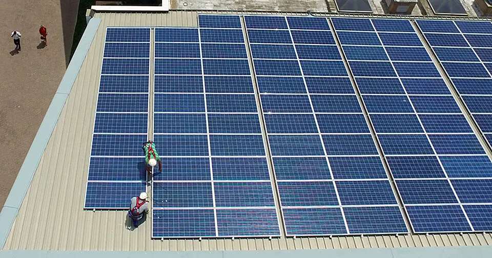
Ajánlatkérés
Írja le röviden az igényét. Munkatársunk egy munkanapon belül keresi.
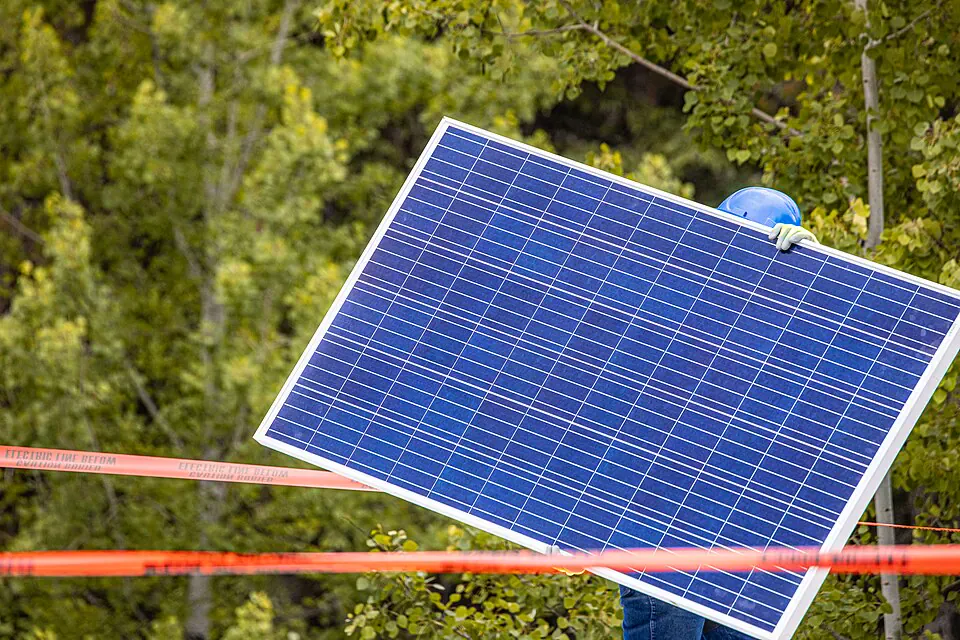